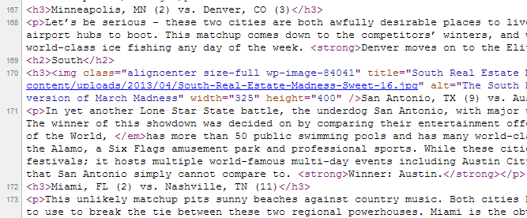
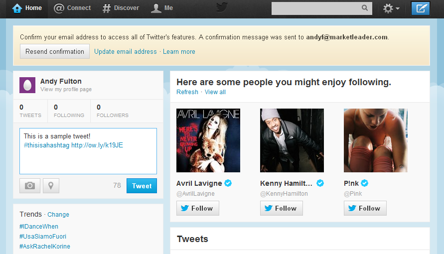

800.978.5174
800.978.5174Hello, everyone. My name is Andy Fulton, and I work as a community manager for Market Leader. Two of my primary duties are to manage the social media and search engine optimization (SEO) efforts for RealEstate.com, one of Market Leader’s consumer-oriented sites.
I have spent the last two and a half years working on social media and SEO for several Seattle-area companies and nonprofit organizations, and, as part of Market Leader’s efforts to provide practical educational materials for American and Canadian real estate agents, I would like to share what I’ve learned about these subjects with you.
This is the first article of “Social + SEO,” a series of monthly educational blog posts on social media and SEO tools and strategies that real estate agents can use to expand their business. Social + SEO will cover topics and strategies that are easy to learn, simple to implement and, most importantly, will provide you with an immediate return on your time investment.
Every Social + SEO post will cover two topics, one on social media and another on search engine optimization. I will describe each topic, demonstrate how you can implement it and then explain how your business will benefit.
Review – What is Social Media and SEO?
Before we delve into this month’s topics, I want to make sure that you know what I mean when I say “social media” and “search engine optimization.”
Social media, simply put, are the ways people communicate with each other through the Internet. The best examples of social media include social networks like Twitter, Facebook and Google+, but other services, like YouTube, Instagram and even some video games can be put into that category as well.
Search engine optimization, or SEO, is the process of increasing the number of times a website, web page or blog post gets clicked in search engine results. This is primarily accomplished by improving the rankings of sites and pages in the search results of Google, Yahoo, Bing and other search engines.
Search engine rankings are determined by many different factors; the exact number varies based on the search engine. Google, for example, has more than 200 known factors that play into its search engine ranking process. These include the number and quality of links a piece of content receives, the number of times it is shared on social media, and the average amount of time visitors spend reading the content.
Content Formatting
Proper formatting of text on the Internet is critical because it impacts how both people and search engines view it. People are more likely to read a blog post that consists of multiple paragraphs, headers, lists and other formatting elements than a blog post that consists of just one paragraph – a massive, impenetrable block of text. Search engines recognize this, and, because their goal is to provide the best web content to their users, place well-formatted content higher in their result pages than similar content that is not formatted well.
It’s important to note that simply having well-formatted text on your site won’t make it rank on the first page of search engine results for every keyword you target. However, because properly formatting text is relatively simple to accomplish, it is arguably the most fundamental aspect of SEO and is something that everyone who publishes content on the web should implement.
Paragraphs
Your first formatting consideration when writing an article should be its paragraph structure. Paragraphs are the most fundamental way of organizing text; sentences that are all closely related are lumped together so that information is conveyed to the reader in an easy and logical manner. For example, the paragraph you are reading now is the introductory paragraph for this section; I will begin the second paragraph once it is time to discuss a new topic.
Many novice writers have the tendency to combine a multitude of topics into single paragraphs. As a result, their content features massive blocks of text that are difficult to penetrate. It can be confusing when you have many different topics present in the same place, and the sheer volume of words present in large paragraphs makes them hard to read.
Whenever you are writing a piece of content, always try to break large paragraphs down into several smaller ones. Roughly speaking, “large” paragraphs are those that are seven or more lines in length. Ideally, you will never have a paragraph that is longer than 10 lines.
Of course, being too eager to break up paragraphs can pose some danger.
Making paragraphs smaller than they should be deprives them of meaning.
For example, this paragraph and the two above it should be combined into a single paragraph.
Lists
Numbered (ordered) and bulleted (unordered) lists are my favorite ways to format content. This is because lists do the following:
- They convey large sets of information in a concise way.
- They can break down long sentences into short, easy-to-read chunks.
- They make it easy for readers to follow your line of thinking or the steps you took to accomplish something. This is particularly true for numbered lists.
Use the following steps to create lists:
- Find long paragraphs that cover many aspects of a similar subject. For example, paragraphs discussing the many steps you need to make in order to get a mortgage loan or descriptions of your city’s neighborhoods.
- Identify the individual components of the overarching subject. For example, identify the sentences that pertain to each city neighborhood or step of the mortgage loan application process.
- Determine what kind of list is most appropriate to use. For example, a bulleted list would be best for descriptions of city neighborhoods, and a numbered list would be best for providing the steps required to get a mortgage loan.
- Break the long paragraph into many items on your numbered or bulleted list.
Headers
It is vital that you use headings and subheadings because they are used to organize content and communicate what individual sections are about in broad terms. A piece of content without headers is of poor quality, regardless of the information it contains and how that information is conveyed. The many subjects this post encompasses would make it impossible to read were it not for the many headers that organize it.
Headers are equally useful for search engines. Search engines use headers to understand what articles are about so they can give their users exactly what they are looking for. It is thus absolutely necessary to use headers – and, if possible, include keywords within them – so as to maximize your content’s SEO potential.
It is not enough to make your headers bold. You must use special HTML code to identify headers for search engines. Use the following code snippets as examples for how headings look:
<h1>This is the main heading, the title of the post</h1>
<h2>This is the first subheading</h2>
<h3>This is the first secondary subheading of the first subheading</h3>
<h3>This is the second secondary subheading of the first subheading</h3>
<h2>This is the second subheading</h2>
<h3>This is the first secondary subheading of the second subheading</h3>
<h3>This is the second secondary subheading of the second subheading</h3>
Here is some sample HTML code from a published blog post:
I will discuss putting keywords in headers in further detail in an upcoming blog post.
Bold, Italics and Underline
There is no better way to communicate to readers what words you are trying to emphasize or to show them what parts of your content is most important than to underline, italicize or bold them. These basic formatting techniques are most useful for human readers, but some search engine optimizers believe that putting your keywords in bold will help their content rank higher for those keywords in search engine results.
Please note that one of the biggest formatting mistakes you can make is to overuse bold, italicized or underlined text. It would be obnoxious and off-putting to read an entire article written in the same style I used for the first sentence of this section.
Horizontal Rules
A horizontal rule is an underutilized but effective formatting trick that is most useful for long pieces of content. When you need to communicate to the reader and search engines that you are switching from one broad, overarching topic to another, use a horizontal rule.
To make a horizontal rule, or “HR,” simply type the following code snippet into your HTML editor: <hr />.
I typically give some additional specifications on how the horizontal rule should appear (called HTML attributes), like height. This is the horizontal rule I use most frequently: <hr style="height: 2px;" />. This code snippet creates a horizontal rule that is two pixels high.
For those who want to be adventurous and change the appearance of their horizontal rules, use these simple HTML horizontal rule attributes.
How You Benefit
As I discussed above, formatting text will help both human readers and search engines access and understand your content more easily. This will encourage people to share your content and spend more time reading it, two of the important SEO factors discussed in the “Review” section of this blog post. Search engines place a premium on well-formatted content because they have a better understanding of what it is about and figure that human readers will appreciate it more than poorly-formatted content.
Having well-formatted text won’t propel your content to the front page of Google’s search engine results, but it is your first step to getting there.
Twitter Basics
Twitter is a free social networking service that consists of short, text-based messages. These messages, called “tweets,” can be no longer than 140 characters, are generally visible to the public and can contain links to websites or images. Twitter has over 200 million active users and is the third largest social network in the world. Around 25 million of these users reside in the US.
Twitter users “follow” other users in order to read their tweets. The tweets of the people you follow appear in your “feed,” which is basically a long list of tweets in descending chronological order. Your feed will constantly update, bringing in new tweets from the people you follow. This stream never ends, so you generally won’t see the tweets of users you follow unless you happen to be on Twitter when they are tweeting.
While it’s true that many tweets are meaningless, poorly spelled drivel, millions of businesses and professionals use Twitter to share their expertise and interact with each other and consumers. Twitter gives its users the unprecedented ability to instantaneously broadcast short, easily-digestible messages – for free – to tens of millions of people around the world. RealEstate.com, for example, uses its Twitter account to announce important site updates, promote blog posts, share information about the real estate market and interact with real estate professionals (among other things).
While social media experts generally agree that you should limit the number of times you post on your Facebook page, there is no downside to tweeting around the clock – as long as the content of the tweets is valuable, of course.
Create a Twitter Account
Twitter accounts are exceptionally easy to make. Your first step is to open a web browser and visit Twitter.com. The home page will have a box titled “New to Twitter? Sign up” where you can start the account creation process by providing your name, email address and a password. These pieces of information can be changed once you have created your account. Click on the “Sign up for Twitter” button once you have done so.
Next, you will be taken to a page where you can review the information you just entered. Pay attention to the “Choose your username” text box. Your username will be the aspect of your profile that people interact with as well as the primary way people find you on Twitter. Usernames cannot be changed once accounts have been created, so make sure your name is professional, simple and meaningful (i.e., pertains to you or your business). Click on the “Create my account” button once you have selected your username.
Follow Other Users
Twitter will walk you through its features with a handy tutorial once you have created your account. During the walkthrough, it will prompt you to follow other Twitter users. By following a user, you are electing to read everything that they tweet. This relationship is not reciprocal, however; other users must follow you in order to read what you tweet!
It’s easy to find people to follow on Twitter. In the search bar located in the upper right corner of the screen, simply type in a keyword that corresponds with the type of users you would like to find. In the below screenshot, I searched for “real estate” in order to find users in that industry.
After pressing enter, the following search results appeared. Several accounts that relate to real estate are listed at the top (and I can press “view all” to see more users) as well as tweets that contain the keyword “real estate.”
Of course, if you can’t find a person or organization using Twitter’s search function, simply perform a Google search for their name followed by the word “Twitter” (i.e., “Market Leader Twitter”). The account you are looking for will generally be in the top couple of results.
Don’t know who to follow? Simply ask yourself, “Whose opinion do I care about?” As a real estate professional, you most likely care about news, strategies and insights pertaining to the real estate market. You probably also care about the local market in which you operate. Find the accounts of the professionals and organizations that tweet on these subjects and follow them. Next, monitor who those accounts interact with, and follow them as well. Finally, follow the people or organizations that interact with you; Twitter is a social network, after all, so make sure you use it to socialize!
FYI: The blue check mark that appears next to some Twitter users’ usernames demonstrates that they have been “verified” by Twitter. Verification is meant to demonstrate that the account actually belongs to the person or organization claiming it. Unless you become a highly sought after expert on real estate, or start an important company within the real estate industry, do not count on being verified.
How to Tweet
Tweets form the backbone of Twitter. They are what you create, read and interact with whenever you use it.
To create a tweet, simply visit the “Home” section of your Twitter profile. There will be a text box in the left sidebar that reads “Compose new Tweet…” Click on this text box to write a tweet, and remember that it has to be 140 characters or less! (Alternatively, you can click on the blue button in the upper right corner of your screen.)
In addition to regular text, you can add links and hashtags to your tweets.
You should add links to your tweets whenever you are talking about something found on the Internet that can’t be summarized in 140 characters. Links on Twitter operate the same way that links operate anywhere else on the Internet, but given the character limit, we advise you use a link shortener like ow.ly. These two links go to the exact same web page, but the latter one is far fewer characters in length!
Hashtags are words or phrases marked with a “#” symbol. Twitter users add hashtags to their tweets in order to identify the content. For example, a tweet about real estate may use the hashtag “#realestate.” Using hashtags in your tweets can help them be found by other users. For example, if enough Seattle real estate agents use the term #seattlerealestate, it can become a “trending topic” (listed in the “Trends” box on your Twitter home page) on a local or even national level.
Please note that the conventional order of content in tweets is as follows: Main tweet text, link, hashtags.
Connect with Other Users
It’s possible to start a conversation with other Twitter users by using the “@” symbol. For example, if you were to tweet “I love your site, @Real_EstateCom,” the RealEstate.com staff would get a notification and see your tweet in the “Connect” portion of our Twitter account. You would get a similar notification if we responded with “Thanks, @random_agent, we like yours as well.”
You can also interact with users by “favoriting” their tweets. To do this, simply click on or hover your mouse over a tweet and then click on the “Favorite” button. The user whose tweets you favorite will get a notification that you have done so. The benefit you receive from favoriting others’ tweets is convoluted; accounts that have many tweets that have been favorited appear more prestigious, so favoriting other users’ tweets will earn you some brownie points with them.
How You Benefit
Can you make a living as a real estate agent without being an active Twitter user? Absolutely. Do the agents with the best online presences all have Twitter accounts? You better believe it!
So why do real estate agents bother with Twitter if they don’t need to have it? The short answer is that Twitter is exceptionally advantageous for businesses and professionals. It gives them another avenue to communicate with potential clients, to connect with fellow professionals, and to keep track of developments in their industry. Twitter can also be used to develop rapport within your geographic or industry community; if you tweet frequently and intelligently about your region or industry, other Twitter users will come to associate you with both. It also gives you a simple, fast and free way to instantly communicate with hundreds, thousands, or (in some cases) millions of people who follow you. Most importantly, as the world grows increasingly connected through the Internet and social media, consumers will use services like Twitter more and more frequently to contact businesses like yours.
From personal experience, I can confirm that Twitter is an excellent way to get in touch with businesses. On two separate occasions, I have used Twitter to contact customer service personnel when more conventional means failed. While my emails and calls went ignored, my tweets were responded to within hours. I can also confirm that my perception of who is a thought leader in various fields is heavily derived from who I see tweeting about those fields. Seattle-area real estate agents should see consumers like myself as an excellent opportunity; convince me to follow you and read your tweets, and I will likely contact you when it comes time for me to buy my first home.
Social + SEO Homework #1
Do not expect to internalize the lessons taught in this post merely by reading them. It is necessary to work with the tools and practice the strategies discussed here if you want to become more adept at social media and search engine optimization.
That being said, please complete the following homework before reading the next post in this series:
- Practice formatting text by adding headers, lists, small paragraphs and horizontal rules to a new or existing blog post.
- Create a Twitter account, add a profile picture, add your personal information, and follow members of your real estate and geographic community.